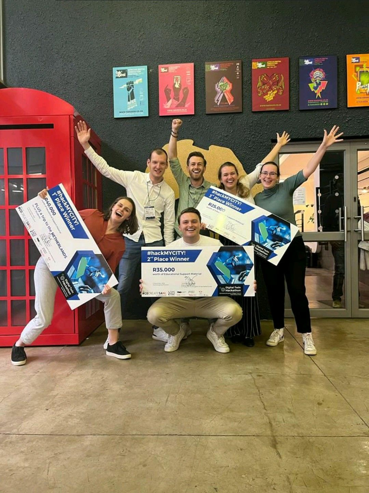

Alex Donkers & Inga Maria Giorgadze 29 November 2022 5 minutes
Five students from the University of Twente and five students from Eindhoven University of Technology achieved outstanding results at the digital twin hackathon in Johannesburg last month. The students of the Dutch universities created digital twins to tackle challenges related to waste management, road asset management, walking safety, and circularity of building materials and bring the 1st, 2nd, and 3rd price back home. The jury was impressed by the innovative solutions of the students and envisions the potential for future development of the results. The #hackMYCITY experience The hackathon started with a visit to the University of Johannesburg and the University of Pretoria to learn about digital twinning initiatives in South Africa and the cities’ challenges related to transportation, environment, asset management, and circularity. After some inspiring lectures on the second day, the Dutch students mixed with students from the University of Johannesburg and the University of Witwatersrand. The six international teams then applied their digital skills to tackle local challenges for the remainder of the week. The Dutch Digital Twins Iván Cárdenas (ITC, Twente) and Lara Andriessen (CME, Eindhoven) were members of team The Trashketeers. Their digital twin – Jo’trash – addressed the immense problem of waste management in Johannesburg. Jo’trash uses VGI and Network Analysis to identify full containers and areas with illegal dumps to improve the garbage collectors’ routing. The tool is composed of a web app for citizens to report waste and a dashboard for garbage collectors to locate the location of full bins and illegal dumps and to visualize the most optimal route to collect the waste. The Trashketeers suggested that this tool can help the local administration to improve their waste management, to reduce obstructed sewages, and, hence, reduce the risk of inner-city floods. Jo’trash impressed the jury so much that the students did not only receive the first prize but also received a fund to implement a pilot around the University of Pretoria. Nima Zarrinpanjeh, Inga Maria Giorgadze (CME, Twente), Marijn Janssen Steenberg, and Bob van der Hall (CME, Eindhoven) were so impressed by the potholes in some roads that they wanted to tackle the challenge of road asset management. Their digital twin prioritizes the maintenance needs of Johannesburg’s streets using dynamic data of the network usage and road conditions. The team proposed to mount cameras on public service vehicles, such as garbage collecting units, to periodically scan the road surface. Using photogrammetry technologies, information about the severity of the damages could be extracted. Apart from using this information, the team suggested using time series data to predict the progress of street damages. This enables opportunities for predictive maintenance of roads, which the team nicely visualized in a dashboard. Next to a second prize, the students were invited by Royal HaskoningDHV to further collaborate on this digital twin. Luis Rodrigoandrés Morales Ortega, Yue Ying (ITC, Twente), and Suzan Evers (USRE, Eindhoven) tried to make walking in Johannesburg safer by designing a digital twin that calculates the safest walkable route using real time data. Their digital twin Shaping Power makes use of available data related to safety, such as streetlights, the presence of informal traders, crowdedness, and reported crimes. Shaping Power intends to allow both citizens and urban planners to understand which streets in the city of Johannesburg are unsafe. With this knowledge, both stakeholders can develop ideas to claim back streets and turn them into safe and walkable areas. Pedestrians can use the tool to take the safest route by visualizing the ability to safely walk on streets in real time. They can vote on how safe they felt during a walk, and their feedback can be used to retrofit the digital twin with new data. Urban planners can use the digital twin to get more knowledge about safety in the city and to make those streets safer. Shaping Power tackled a well-known problem in Johannesburg and was awarded the 3rd prize. Lianne Willekers (CME, Eindhoven) was part of team Second Life. After experiencing the sheer number of abandoned buildings in Johannesburg, the team invented a digital twin that helps reusing the construction materials in these buildings. Their tool combines geospatial data with building information models. It first integrates geospatial data related to abandoned and demolished buildings and building permits to locate potential construction elements that could be re-used. The team then applied GeoBIM to add building information models to these plots of land, containing building product information. Through a website that functions as a marketplace, contractors could search for building elements that match their requirements in the GeoBIM database. The tool aims to connect the supply and demand of circular building materials to reduce the use of raw materials. Wider impact The interdisciplinary teams of Dutch and South African students generated many creative ideas that can be widely adopted. Despite the short amount of time, the students managed to combine their skills from various backgrounds in versatile teams. With the valuable guidance of both Dutch and South African mentors, the teams were able to present concrete and impactful digital twins. The students did not only impress their mentors but also exceeded the expectations of the organizers. Discussions for further collaborations and developments of the digital twins have already emerged. The #hackMYCITY digital twin hackathon is another example of successful collaboration between two 4TU universities. Through collaboration, students from different 4TU universities contributed to solving real challenges using digital twins. Strengthening relationships will inevitably lead to innovations in digital twins in the future. Acknowledgement This hackathon would not be possible without the support of Tshimologong Digital Innovation Precinct, the Embassy of the Kingdom of the Netherlands in South Africa, and all involved universities. Finally, the success of the participants and the three prizes would not be possible without the insightful guidance and help of their mentors Mila Koeva, Faridaddin Vahdatikhaki, Léon Olde Scholtenhuis, Pieter Pauwels, and Alex Donkers.